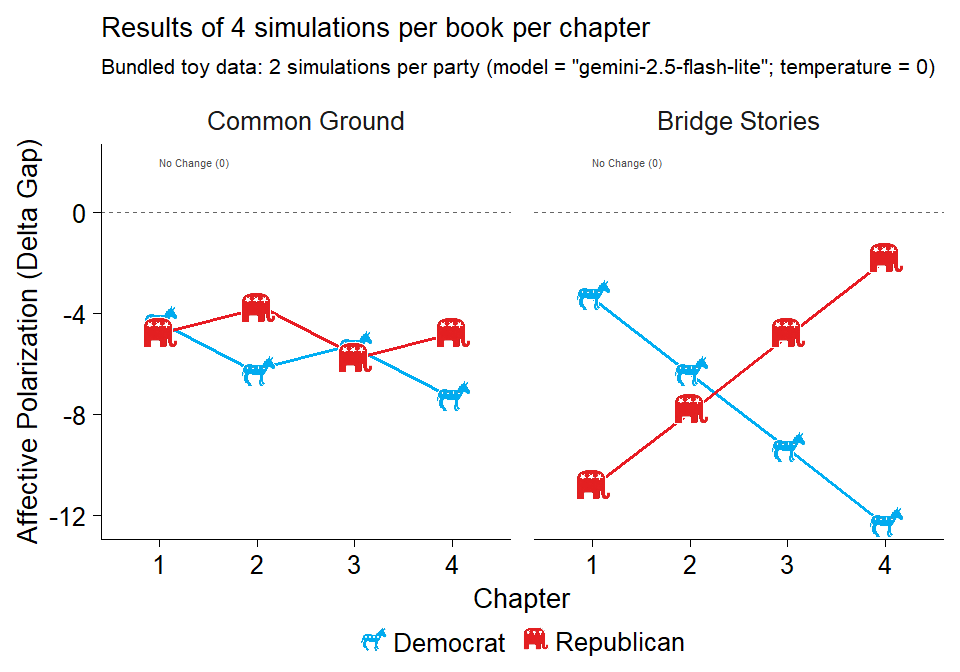

Overview
The nalanda package provides tools for simulating, summarizing, and plotting chapter-level AI reading responses. It is designed for workflows that ask whether books shift prosocial attitudes, outgroup warmth, and affective polarization across chapters or across whole books.
Installation
You can install the development version of nalanda from GitHub with:
install.packages(
'nalanda', repos = c(
'https://centerconflictcooperation.r-universe.dev',
'https://cloud.r-project.org'))Example workflow
The main workflow has three steps:
- run
run_ai_on_chapters()to get raw turn-level output - convert the raw turns to chapter-level metrics with
compute_run_ai_metrics() - summarize or plot the processed results
This README uses bundled toy data so it renders quickly and does not require live API calls.
library(nalanda)
raw_turns <- run_ai_on_chapters(
book_texts = "A short chapter about people from different groups cooperating.",
groups = c("Democrat", "Republican"),
context_text = "You are simulating an American adult who politically identifies as a {identity}.",
question_text = "On a scale from 0 to 100, how warmly do you feel towards {group}s?",
n_simulations = 2,
temperature = 0,
model = "gemini-2.5-flash-lite"
)
chapter_results <- compute_run_ai_metrics(raw_turns)
library(nalanda)
img_paths <- list(
Democrat = normalizePath("man/figures/dem.png"),
Republican = normalizePath("man/figures/rep.png")
)
chapter_results <- compute_run_ai_metrics(toy_run_ai_turns)
head(chapter_results[, c("book", "chapter", "sim", "party", "delta_gap")])
#> # A tibble: 6 × 5
#> book chapter sim party delta_gap
#> <chr> <chr> <int> <chr> <dbl>
#> 1 Bridge Stories chapter_1 1 Democrat 3
#> 2 Common Ground chapter_1 1 Democrat 4
#> 3 Bridge Stories chapter_1 1 Republican 11
#> 4 Common Ground chapter_1 1 Republican 5
#> 5 Bridge Stories chapter_1 2 Democrat 3.5
#> 6 Common Ground chapter_1 2 Democrat 4.5Use the processed chapter-level results directly with the time-series plotting helper:
plot_chapters_over_time(
chapters = chapter_results,
dv = "delta_gap",
group = "party",
y_label = "Affective Polarization (Delta Gap)",
plot_subtitle = "Bundled toy data: 2 simulations per party",
plot_title = "Results of 4 simulations per book per chapter",
error_bars = FALSE,
reverse_score = TRUE,
groups.order = "none",
facet = "book",
facets.order = "decreasing",
line_width = 1.2,
point_images = img_paths,
image_size = 0.09
)
Synthetic chapter-level trajectories of affective polarization change by party.
The same workflow scales to:
- raw turn-level output from
run_ai_on_chapters()after processing withcompute_run_ai_metrics() - summary tables via
summarize_chapter_scores() - saved
.rdssimulation outputs - book-level summaries via
summarize_chapter_scores(..., aggregate_level = "book") - visualization with
plot_chapter_trajectories(),plot_chapters_over_time(), andplot_forest_books()
For API setup and a live minimal simulation example, see the vignette:
vignette("getting-started", package = "nalanda")About the Name
The package is named after Nalanda Mahavihara, one of the most renowned centers of learning in ancient India. Founded in the 5th century CE, Nalanda was a Buddhist monastic university that attracted scholars from across Asia and became a symbol of knowledge, wisdom, and the pursuit of learning through texts and collaboration.
This name is particularly fitting for a package related to the study of books and prosociality, reflecting the historical significance of Nalanda as a center for both scholarly texts and the cooperative exchange of ideas. The connection resonates with contemporary research on how books and shared learning can foster prosocial behavior and cooperation.
The package also includes a small helper to explore historical facts about Nalanda University:
library(nalanda)
# Get a random fact about Nalanda University
nalanda()
#> [1] "Nalanda remained an active center of learning for roughly 700 years until the 12th century."Learn more about related research on books, learning, and prosociality: Mind and Life Europe - 2024 EVA Recipients & Projects